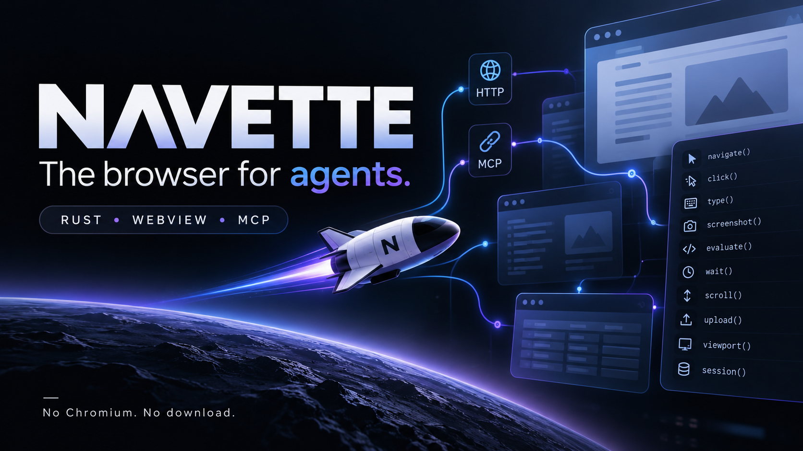
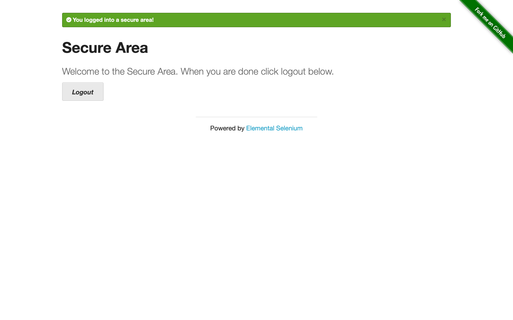
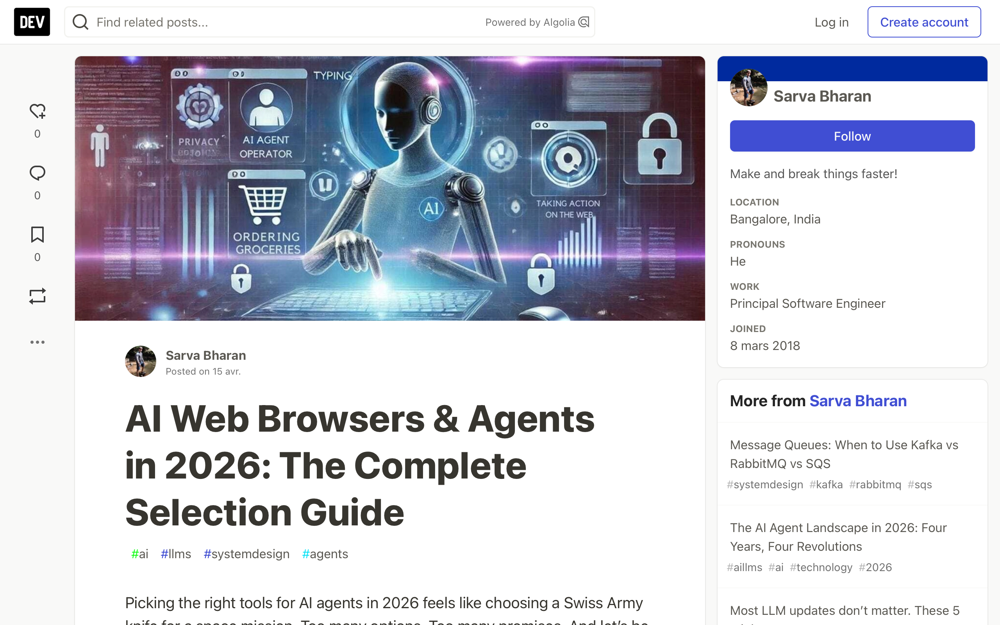

The browser for agents.
One tiny Rust binary driving the WebView your OS already ships — no Chromium, no download, no RAM bonfire.
Navette is French for shuttle: the small vessel that carries your agent from page to page. Always fueled — the engine ships with your OS.

Every agent drags along the same stack: headless Chromium.
Playwright and Puppeteer download ~300–400 MB of browser per machine and burn ~100–200 MB of RAM per open page, driven by CDP — a protocol built for DevTools, not for agents. But what an agent actually needs is small: go to a page, execute its JS, read the text, take a screenshot, click, type. Your OS already ships a full rendering engine. navette is the few hundred KB of glue that drives it.
| Playwright + Chromium | Lightpanda | Browserbase (cloud) | navette | |
|---|---|---|---|---|
| Engine download | ~300–400 MB | 96 MB | none (remote) | none — the engine is the OS |
| Engine completeness | full | partial (alpha) | full | full — system WebKit, real layout + JS |
| RAM per page | ~100–200 MB | ~123 MB peak | n/a (their bill) | WebView-native |
| Protocol | CDP | CDP | REST | MCP native (+ plain HTTP) |
| Runs where | anywhere | anywhere | their cloud | anywhere with a system WebView |
On Windows the system WebView is WebView2 — Chromium, preinstalled on every Windows 10/11: Chromium-grade rendering from a 0.6 MB binary. Headless Chromium is the Postgres of scraping; navette is the embedded SQLite.
Measured, not vibes.
Same machine, same 100-page corpus (50 static / 50 JS-built) on loopback HTTP. Medians; RAM is the peak of the whole process tree. Reproducible with one command — see BENCHMARKS.md.
| Metric | navette (system WebKit) | Playwright + Chromium | Lightpanda (CDP) |
|---|---|---|---|
| Install size (on disk) | 0.6 MB | 215.8 MB | 96.1 MB |
| Cold start → first page read | 669 ms | 934 ms | 33 ms |
| Navigate → readable content | 11 ms | 12 ms | 12 ms |
| Act: type + click round-trip | 2 ms | 33 ms | 18 ms |
| Peak RAM, whole tree | 79 MB | 599 MB | 41 MB |
| Crawl: 100 pages navigate+read | 1.5 s | 1.8 s | 0.9 s |
The honest reading: Lightpanda wins fresh-process boot and peak RAM — it parses a partial DOM, cannot render and cannot screenshot. navette is the fastest full-rendering reader, and it acts 9–16× faster than both (2 ms vs 18–33 ms). On the real web: 95–100% success vs 85% for Playwright. Resident daemon mode drops the cold start an agent feels to 24–37 ms.
One command. No browser comes with it — one was already there.
Homebrew · macOS
arm64 bottle, WKWebView backend.
brew install slabbdev/tap/navette
cargo · any platform
From source on crates.io — macOS, Windows, Linux.
cargo install navette-browser
Docker · stdio MCP
Container with WebKitGTK, amd64 + arm64.
docker run -i --rm ghcr.io/slabbdev/navette navette mcp
8 primitives. No DevTools baggage.
Everything an agent does on a page, and nothing else. The same surface on WKWebView (macOS), WebView2 (Windows) and WebKitGTK (Linux) — parity is compile-enforced by the WebviewKit trait.
navigateopen a URL in a session — with_content folds the read into one round-trip
readpage as markdown, text or DOM
screenshotnative capture — what the compositor drew
clickreal pointer + mouse events; Radix/HeadlessUI menus open
typeReact-safe native setter
evaluaterun JS in the page
waitselector / idle / timeout
sessionsparallel named sessions, lazily created
…plus hover key scroll upload viewport session_show/session_hide state_export/state_import — 18 tools on the MCP surface. JS dialogs are auto-handled in-page, so agents never deadlock on a hidden modal.
It logs in. It reads. It comes back with proof.
navette doesn't fetch pages for later parsing — it acts: opens sessions, fills forms, clicks through flows, verifies with screenshots, keeps state across steps. Scraping is the demo; acting is the product.

session_show brings the ghost window on screen — titled, key, focus-gated — for the OAuth/2FA/captcha only a human can do; session_hide parks it again. The session state stays.
navigate + read in one round-trip returns clean markdown of a JS-built page; screenshots come back as MCP image content — the agent sees the page. Full working recipe: demo/dailydev.Loopback by default. Isolation by build failure.
The full reference posture lives in docs/SECURITY.md. The short version:
The server binds 127.0.0.1; non-local Host headers are refused — DNS-rebinding guard, /health exempt.
--token SECRET requires Authorization: Bearer on every route; comparison is constant-time.
A cookie imported into one session must not appear in another's jar — or the build fails. Non-persistent WKWebsiteDataStore (macOS) · per-session WebView2 profile + InPrivate (Windows) · fresh WebContext, cookies never touch disk (Linux).
Cross-run state moves only through state_export / state_import. Proxy credentials are redacted in logs.
Page JS executes inside the OS WebKit sandbox — not in your terminal, not in the server.
Keystrokes are posted only after the Window Server confirms the session's window is key — a key can never land in someone else's app.